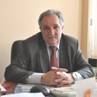
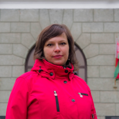
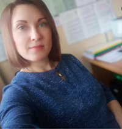

Седнина Марина Александровна
Директор МИДО
Контакты
График приёма посетителей:
- понедельник – с 15:00 до 17:00;
- четверг - с 11:00 до 13:00;
- пятница – с 13:00 до 16:00;
- 3-ая суббота месяца – с 11:00 до 13:00.
Сатиков Игорь Абузарович
Заместитель директора по методической работе, доцент, кандидат физико-математических наук
Контакты

График приёма посетителей:
- понедельник – с 15:00 до 17:00;
- четверг - с 11:00 до 13:00;
- пятница – с 13:00 до 16:00;
- 3-ая суббота месяца – с 11:00 до 13:00.
Карасёва Маргарита Геннадьевна
Заместитель директора по учебной работе
Контакты

График приёма посетителей:
- вторник – с 14:00 до 17:00;
- среда – с 9:00 до 11:00;
- четверг - с 14:00 до 17:00;
- 1-ая суббота месяца – с 10:00 до 13:00.
Сушкевич Надежда Сергеевна
Ведущий специалист МИДО
Контакты

График приёма посетителей:
- понедельник – с 9.30 до 13.00;
- вторник – с 14.00 до 16.30;
- четверг – с 14.00 до 16.30;
- пятница - с 9.30 до 13.00;
- суббота - с 9.30 до 13.00.
Тепликова Галина Викентьевна
Специалист I категории МИДО
Контакты

График приёма посетителей:
- понедельник – с 9.30 до 13.00;
- вторник – с 14.00 до 16.30;
- четверг – с 14.00 до 16.30;
- пятница - с 9.30 до 13.00;
- суббота - с 9.30 до 13.00.
Купрейчик Екатерина Борисовна
Инженер I категории МИДО
Контакты

График приёма посетителей:
- понедельник – с 9.30 до 13.00;
- вторник – с 14.00 до 16.30;
- среда– с 9.30 до 13.00;
- четверг – с 9.30 до 13.00;
- пятница - с 9.30 до 13.00.
Павловец Анжела Михайловна
Специалист I категории МИДО
Контакты

График приёма посетителей:
- понедельник – с 10.00 до 15.00;
- вторник – с 10.00 до 15.00;
- четверг – с 10.00 до 15.00;
- пятница - с 10.00 до 15.00;
- суббота - с 09.00 до 13.30.
Совет института
План работы совета МИДО
№ п/п |
Мероприятия |
Сроки проведения |
Ответственные за подготовку |
| 1.1 |
|
сентябрь 2020 | Директор МИДО |
| 1.2. |
|
сентябрь 2020 | Заместитель директора МИДО по учебной работе |
| 2.1 |
|
26 октября 2020 | Заведующие кафедрами МИДО, ответственный за функционирование СМК |
| 2.2 |
|
26 октября 2020 | Заместитель ответственного секретаря приёмной комиссии |
| 3.1 |
|
30 ноября 2020 | Директор МИДО, заведующие кафедрами, ответственный за международное сотрудничество |
| 3.2. |
|
30 ноября 2020 | Начальник отдела СОПиИПУП |
| 4.1 |
|
28 декабря 2020 | Заведующие кафедрами МИДО |
| 4.2 |
|
28 декабря 2020 | Директор МИДО |
| 5.1 |
|
25 января 2021 | Директор МИДО |
| 5.2 |
|
25 января 2021 | Заведующие кафедрами МИДО |
| 6.1 |
|
22 февраля 2021 | Начальник отдела СОПиИПУП |
| 6.2 |
|
22 февраля 2021 | Заместитель директора МИДО по учебной работе |
| 7.1 |
|
29 марта 2021 | Ответственный за научную работу в МИДО. |
| 7.2 |
|
29 марта 2021 | Заместитель директора МИДО по учебной работе, заведующие кафедрами МИДО. |
| 8.1 |
|
26 апреля 2021 | Директор МИДО, председатель методической комиссии МИДО. |
| 8.2 |
|
26 апреля 2021 | Ответственный за работу с иностранными обучаемыми в МИДО |
| 9.1 |
|
31 мая 2021 | Заведующие кафедрами МИДО |
| 9.2 |
|
31 мая 2021 | Директор МИДО |
| 10.1 |
|
28 июня 2021 | Заместитель директора МИДО по учебной работе, заведующие кафедрами МИДО |
| 10.2 |
|
28 июня 2021 | Секретарь Совета МИДО |
| 11 |
|
в течение года | Секретарь Совета МИДО |